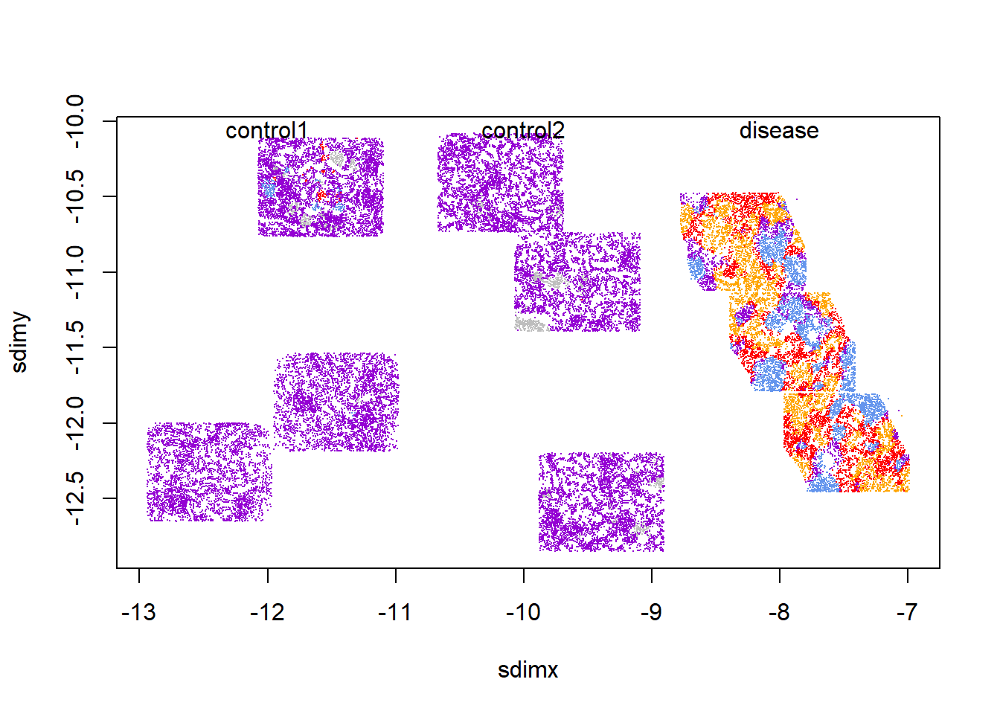

Best practices for CosMx RNA analysis. Post 2 of 3, covering exploratory analysis techniques - pathway scoring, Moran’s I for finding spatially dependent genes, InSituCor for finding modules of spatially correlated genes, and InSituDiff for analyzing perturbations from control samples.
Here we provide workflows for exploratory analysis. Also see the companion posts on pre-processing and confirmatory analysis with differential expression testing. A complete analysis will typically begin with the pre-processing workflow, use exploratory analyses to generate hypotheses, then conclude by using differential expression analysis to test those hypotheses.
CosMx datasets, with thousands of genes and hundreds of thousands of cells, contain an incomprehensible richness of biological trends. Even when you have a primary hypothesis in mind, it’s worth seeing what unexpected findings your data holds. To this end, various exploratory analysis tools exist to help you answer the basic question, “what in this dataset might be worth paying attention to?”
A great many tools exist for exploring spatial data, and we do not attempt to catalog them here. Instead, we’ll share a few techniques we’ve found useful. The four tools we discuss are:
To begin, load your fully pre-processed data (including cell type annotations). We assume the format generated by the preprocessing vignette:
a sparse counts matrix with cells in rows and genes in columns
a data table of per-cell metadata, row-aligned with the counts matrix
a matrix of cells’ xy positions, row-aligned with the counts matrix
Code
## load necessary librarieslibrary(data.table) # for more memory efficient data frameslibrary(Matrix) # for sparse matrices like our counts matrixlibrary(InSituCor) # devtools::install_github("https://github.com/Nanostring-Biostats/InSituCor")library(InSituDiff) # remotes::install_github("Nanostring-Biostats/CosMx-Analysis-Scratch-Space", subdir = "_code/InSituDiff", ref = "Main")library(AUCell) # BiocManager::install("AUCell")library(msigdbr) # BiocManager::install("msigdbr")## load data:counts <-readRDS(paste0(outdir, "/processed_data/counts.RDS"))metadata <-readRDS(paste0(outdir, "/processed_data/metadata.RDS")) # expected to have the column "celltype"xy <-readRDS(paste0(outdir, "/processed_data/xy.RDS"))## normalize counts matrix using efficient sparse matrix calls:scale_row <-mean(metadata$nCount_RNA) / metadata$nCount_RNAnorm <- countsnorm@x <- norm@x * scale_row[norm@i +1L]
2 Computing pathway scores
Computing per-cell scores of pathway activity is useful for a few reasons:
Single gene expression values are noisy; pathway scores, computed across broader sets of genes, are more statistically stable.
Pathway scores are often easier to interpret.
Dimension reduction: it’s more convenient to analyze hundreds of pathways than thousands of genes.
We have tried a variety of pathway scoring approaches, and AUCell with REACTOME gene sets has emerged as our preferred approach. (That said, our benchmarking was not definitive, and we have no specific concerns about alternative methods.)
You can compute per-cell pathway scores as follows:
Code
## run AUCell: # WARNING: below takes hours in a single flowcell dataset and creates a 3 Gb data objectif (TRUE) {tic() pathscores <- AUCell::AUCell_run(exprMat = Matrix::t(counts), geneSets = gene.sets) # , BPPARAM = BiocParallel::MulticoreParam(workers = 8)toc()saveRDS(pathscores, file =paste0(outdir, "/processed_data/pathscores.RDS"))} else { pathscores <-readRDS(paste0(outdir, "/processed_data/pathscores.RDS"))}
The pathway scores calculated above can now be used anywhere you’d use a gene expression matrix. Our favorite uses of pathway scores are:
Simply look at spatial plots for pathways of interest.
Look for spatially variable pathway scores, e.g. with the Moran’s I code below.
Score cells for neighborhood pathway activity, e.g. “mean neighborhood IFNG pathway score”, and use this as a predictor in differential expression analyses.
Compare mean pathway scores between cell types of interest, e.g. tumor subclusters.
Compare pathway scores across niches.
It’s also possible to run differential expression analysis on pathway scores, but we prefer to run DE on single genes, then run gene set enrichment analysis.
Note: the above code produces a dense matrix of cell x pathway scores. For larger datasets, this will tax your memory. For bigger studies, you could compute them in chunks, e.g. separately for each tissue, or for each cell type.
3 Looking for spatially variable genes
Many methods have been developed for this task. We use Moran’s I, a very old approach from the world of spatial statistics.
Code
# Source the efficient Moran's functionsource("https://raw.githubusercontent.com/Nanostring-Biostats/CosMx-Analysis-Scratch-Space/Main/_code/vignette2/moransMultiFast.R")# compute neighbors matrix:neighbors <- InSituCor:::nearestNeighborGraph(xy[, 1], xy[, 2], N =50, subset = metadata$slide_ID) # for speed, subset to FOVs covering ~100k cellsset.seed(0)ncells <-1e6cellsperfov <-mean(table(metadata$FOV))nfovs <-ceiling(ncells / cellsperfov)if (nfovs <length(unique(metadata$FOV))) { usefovs <-sample(unique(metadata$FOV), nfovs, replace =FALSE)} else { usefovs <-unique(metadata$FOV)}inds <-is.element(metadata$FOV, usefovs)# compute moran's:# (very fast if not too many cells)morans_all <-moransMultiFast(X = norm[inds, ], W = neighbors[inds, inds], perm =10, compute_sparse =TRUE, compute_perm =FALSE)# plot moran's vs. mean expressionmeanexpr <- Matrix::colMeans(counts)plot(log2(1e-2+ meanexpr), morans_all$I[match(names(meanexpr), morans_all$gene)], col =0, xlab ="Log2 mean counts", ylab ="Moran's I")text(log2(1e-2+ meanexpr), morans_all$I[match(names(meanexpr), morans_all$gene)], names(meanexpr), cex =0.5)# save spatially variable genes:svgs <- morans_all$gene[morans_all$I >0.05]
Genes in the list generated above have strong spatial correlation and therefore are more likely to hold biological interest. Plotting them spatially one-by-one and examining the output is a good way to start.
3.1 Moran’s by cell type
Moran’s I and similar approaches have one disappointing feature: they often just highlight cell type marker genes. We don’t need to look for spatial variability to learn that a cell type has spatial patterns; we can just look at the cell type’s spatial distribution. One way to avoid wasting time on trivial discoveries like marker genes is to calculate Moran’s I within a cell type of interest. The top genes from such an analysis will suggest ways the cell type is changing over space.
Code
## calculate Moran's within a cell type:# select just the cell type's cells:inds <- celltype =="macrophage"# Get the neighbor relationships within just the cell type:# (Here we'll use a radius-based approach to account for the fact that cells from a given cell type may fall quite far from their nearest neighbors from the same cell type.)tempneighbors <- InSituCor:::radiusBasedGraph(xy[inds, 1], xy[inds, 2], R =0.03, subset = metadata$slide_ID[inds])# check there's a reasonable number of neighbors per cell:hist(Matrix::rowSums(tempneighbors >0))# compute moran's:morans_mycelltype <-moransMultiFast(X = norm[inds, ], W = tempneighbors, perm =10, compute_sparse =TRUE, compute_perm =FALSE)# plot moran's vs. mean expressionmeanexpr_mycelltype <- Matrix::colMeans(counts[inds, ])plot(log2(1e-2+ meanexpr_mycelltype), morans_mycelltype$I[match(names(meanexpr_mycelltype), morans_mycelltype$gene)], col =0, xlab ="Log2 mean counts", ylab ="Moran's I")text(log2(1e-2+ meanexpr_mycelltype), morans_mycelltype$I[match(names(meanexpr_mycelltype), morans_mycelltype$gene)], names(meanexpr_mycelltype), cex =0.5)
4 Finding modules of spatially correlated genes with InSituCor
Just as genes with strong spatial trends are potentially interesting, so are sets of genes with shared spatial patterns. We created InSituCor to find groups of spatially correlated genes. Importantly, InSituCor ignores correlation driven by the cell type landscape. E.g., it won’t tend to cluster CD19 and CD20 together, because their spatial correlation is only driven by their being expressed in the same cell type, not by any interesting spatial trend. For a full writeup, see the paper; for code, see the package.
A quick run-through of the InSituCor workflow is below:
Code
## key input: data to be conditioned on. Only cell type is necessary, though slide / tissue ID could be used as well .conditionon <-as.data.frame(metadata[, "celltype", drop =FALSE])## run InSituCor:# (<10 mins)res <- InSituCor::insitucor(# fundamental input data:counts = norm, conditionon = conditionon, celltype = metadata$celltype,# args for neighbor definition:neighbors =NULL, xy = xy, k =100, radius =NULL, tissue =NULL, # args for module definition:min_module_size =2, max_module_size =25, min_module_cor =0.1,gene_weighting_rule ="inverse_sqrt", # args for controlling memory and computeroundcortozero =0.1, max_cells =1e5, # args for cell type attribution scoringattribution_subset_size =1000, verbose =TRUE)str(res)## exploring InSituCor results: # You'll want to look for modules that:# - have interesting genes (look at the module content)# - involve your cell types of interest (look at the cell type involvement / attribution scores)# - have interesting spatial patterns (plot their scores in space)# look at the spatial correlation network:plotCorrelationNetwork(res$condcor, modules = res$modules, show_gene_names =TRUE, corthresh =0.1)# look at module content:head(res$modules)# plot a selected module over space:par(mfrow =c(1, 2))# ... at the single cell level:tempscore <- res$scores_sc[, 1]plot(xy, asp =1, pch =16, cex =0.5, cex.main =0.75,main =paste0(colnames(res$scores_env)[1], " single cell score"),xlab ="x mm", ylab ="y mm",col = viridis::viridis_pal(option ="B")(101)[1+pmin(round(100* (tempscore /quantile(tempscore, 0.995))), 100)])# ... and at the level of cellular neighborhoods:tempscore <- res$scores_env[, 1]plot(xy, asp =1, pch =16, cex =0.5, cex.main =0.75,main =paste0(colnames(res$scores_env)[1], " neighborhood score"),xlab ="x mm", ylab ="y mm",col = viridis::viridis_pal(option ="B")(101)[1+pmin(round(100* (tempscore /quantile(tempscore, 0.995))), 100)])# look at the involvement of each cell type in each module:pheatmap(res$celltypeinvolvement, col =colorRampPalette(c("white", "darkblue"))(100),main ="Contribution of cell types to module scores")# zoom in on the cell type involvement for a single module:pheatmap(res$attributionmats[[1]], col =colorRampPalette(c("white", "darkblue"))(100),main ="Contribution of cell types to module genes")
Our results include:
A list of gene modules:
The spatial correlation network:
Module scores over space:
“Cell type attribution scores” estimating how much each cell type is responsible for each module of correlated genes.
And for each module, attribution scores estimating how much each cell type is responsible for each gene in the module.
5 Studying perturbations from baseline using InSituDiff
The InSituDiff algorithm is a useful tool for exploring studies with both disease and baseline samples. It matches cellular neighborhoods in disease with the most similar baseline neighborhoods, then records the discrepancies as “perturbations”. These perturbations are then very useful fodder for downstream analysis. In practice, we find that InSituDiff quickly highlights the genes and spatial regions that are most worthy of attention. For a full writeup, see the blog post; for code, see the package.
Note: InSituDiff is meant to reveal perturbations from baseline. If you have no reasonable baseline samples, say in most cancer studies, then you’re better off using InSituCor.
A quick run-through of exploratory analysis using InSituDiff is below:
Code
# get the necessary data to run analyses:# (a few minutes)obj <- InSituDiff::initializeISD(mat = norm, # matrix of normalized expressionxy = xy, # matrix of xy coordinatestissue = metadata$tissue, # vector of cells' tissue IDsiscontrol =grepl("control", metadata$tissue), k =50) # define cellular neighborhoods as a cell's 50 nearest neighborsstr(obj)# score perturbations of selected genes over all cells:selectedperturbations <- InSituDiff::getPerturbations(x = norm, obj = obj, cells =rownames(counts)[metadata$tissue =="tissue1"], # only look at one tissuegenes =c("IGHA1", "FGFR3", "HIF1A", "ACE2", "SAT1"), # only look at a few genes of interestresidtype ="log2ratio", # look at perturbations on the scale of log fold-changeseps =1)# score overall perturbation per gene:genescores <- InSituDiff::summarizeGenePerturbation(x = norm, obj = obj, residtype ="log2ratio", plotresults =TRUE, eps =0.1, subsetsize =1e5) # identify highly perturbed genes:hist(genescores[,1], breaks =10)thresh =3abline(v = thresh, col =2, lty =2)hpgs <-rownames(genescores)[genescores[, "broadness"] > thresh]print(paste0("Highly perturbed genes: ", paste0(hpgs, collapse =", ")))# get modules of genes whose perturbations are spatially correlated:modules <- InSituDiff::buildGeneModules(x = norm, obj = obj, genes =NULL, # subset of genes to use; enter NULL to use all, or "highlyperturbed" to take just the most perturbed genes ("highlyperturbed" is our default and our recommendation for full studies; here we use NULL because our mini dataset has only 30 genes.)resolution =0.02, # control leiden clusteringcorthresh =0.3, # control the adjacency network used by leiden clusteringmin_module_cor =0.25, # throw out modules with average cor below thissubsetsize =1e5, eps =0.5, residtype ="log2ratio") modules# score perturbations of selected modules across all cells:moduleperturbations <- InSituDiff::getPerturbations(x = norm, obj = obj, cells =NULL, # only look at one tissuegenes = modules[1:2], # arbitrarily plotting the first and second modulesresidtype ="log2ratio", # look at perturbations on the scale of log fold-changeseps =0.2)plot(xy, pch =16, cex =0.1, asp =1, main =paste0("Perturbation of module ", colnames(moduleperturbations)[1]),col =colorZeroCentered(moduleperturbations[, 1], maxquant =0.999))# define spatial domains of perturbations by clustering perturbation values across space:set.seed(0)res <- InSituDiff::clusterPerturbations(x = norm, obj = obj, cells =NULL, genes = hpgs, # using the highly perturbed genes we defined earlier residtype ="log2ratio", nclust =6)plot(xy, pch =16, cex =0.1, col =c("grey", "cornflowerblue", "darkviolet", "orange", "red", "forestgreen")[as.numeric(as.factor(res$clust))]) pheatmap(res$means, breaks =seq(-3,3,length.out =101), col =colorRampPalette(c("darkblue", "white", "darkred"))(100))
The above produces:
Scores for how broadly and how intensely each gene is perturbed
A list of highly perturbed genes - this is very useful for beginning exploratory analyses
Modules of genes whose perturbations are spatially correlated:
Spatial clustering results based on perturbations, not expression. This is useful for partitioning tissues by domains of disease process rather than by tissue architecture.

“Perturbation profiles” of those domains:
6 Conclusion
The above methods are best for hypothesis generation, not as final results in themselves. Trends discovered with these tools very often suggest a specific hypothesis which can be tested with differential expression or with a custom hypothesis test.
![]()